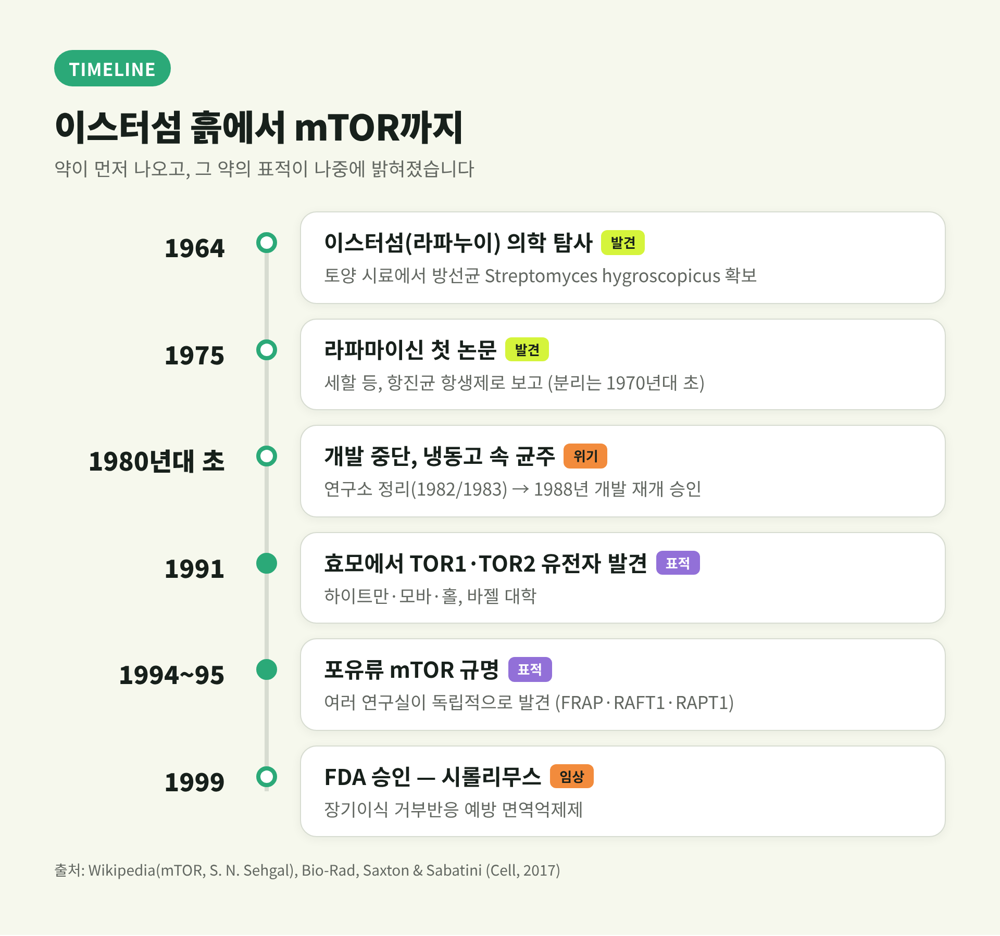
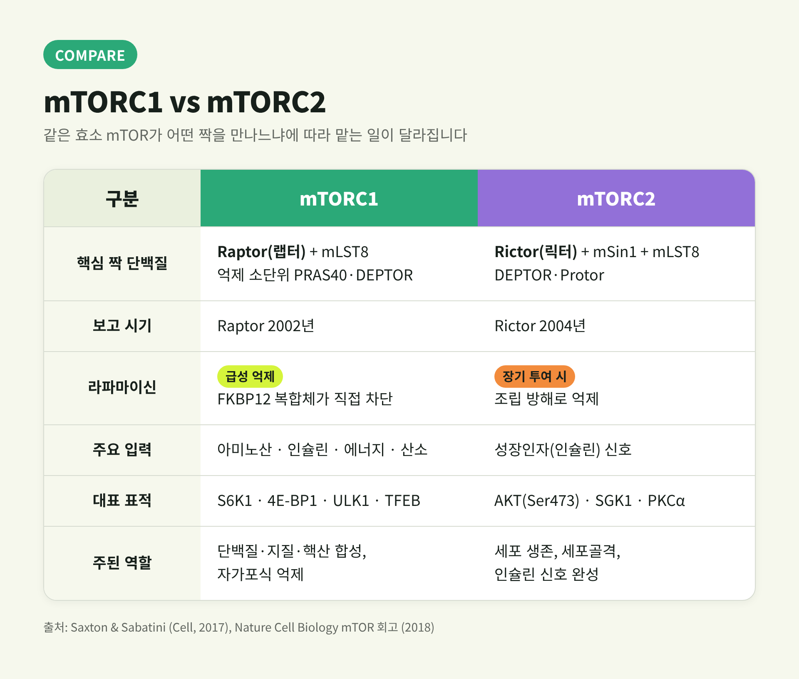
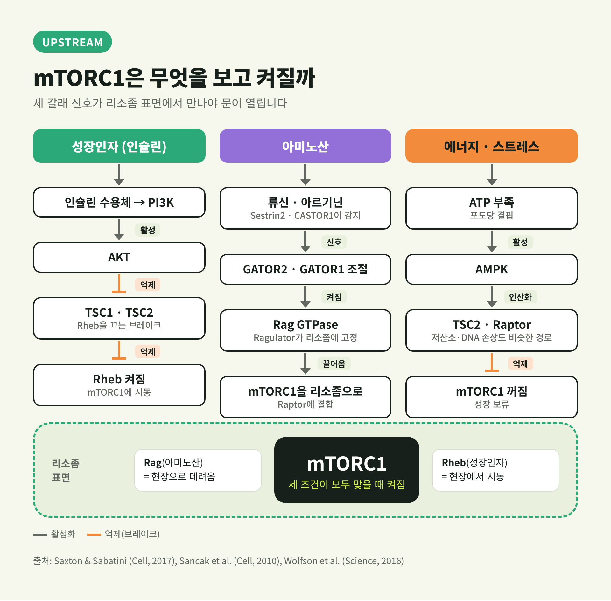
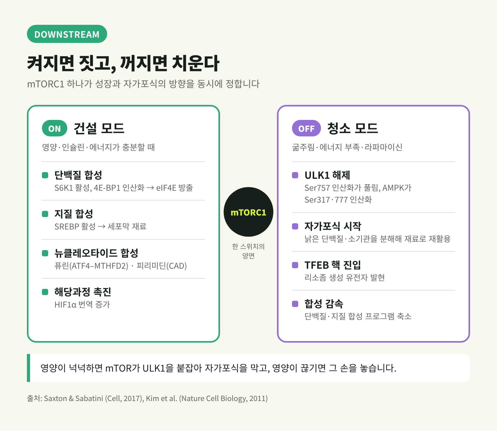
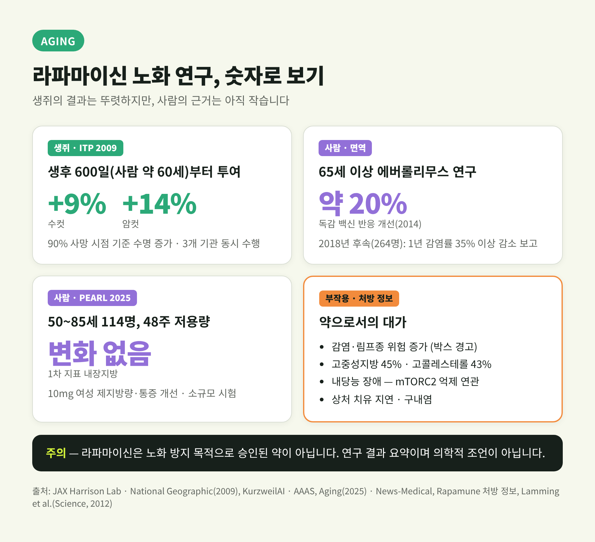

mTOR 신호의 원리 — 세포는 언제 자라고 언제 스스로를 청소할까

이번 글에서는 세포의 성장 스위치로 불리는 mTOR 신호를 정리해 보겠습니다. 이스터섬 흙에서 나온 약 하나가 어떻게 세포 생물학의 큰 갈래를 열었는지, 그리고 이 신호가 노화 연구로까지 이어지는 과정을 따라가 봅니다.
먼저 세 줄로 요약합니다.
- mTOR는 영양(아미노산), 성장인자(인슐린), 에너지(ATP)를 한꺼번에 읽고 "지금 자라도 되는가"를 판정하는 단백질 인산화효소입니다.
- 신호가 켜지면 단백질·지질·핵산 합성이 늘고, 꺼지면 세포는 자기 안을 분해해 재활용하는 자가포식(autophagy)으로 돌아섭니다.
- 이를 억제하는 라파마이신은 장기이식 면역억제제로 쓰이고, 생쥐 수명을 늘린 결과로 주목받았지만 사람에게 노화 방지 효과가 입증된 약은 아닙니다.
이 글은 과학 원리를 소개하는 글이며 의학적 조언이 아닙니다. 약물 복용이나 식단·보충제 결정은 반드시 의료진과 상의하시기 바랍니다.
■ 이스터섬의 흙에서 시작된 이야기
1964년 말, 캐나다 해군 함정 한 척이 이스터섬으로 향했습니다. 섬 원주민 이름으로는 라파누이입니다. 연구자 38명이 참여한 이 의학 탐사대는 섬 주민의 건강과 환경을 조사했습니다.
탐사에 참여한 미생물학자 조르주 노그라디는 섬의 토양 시료를 채취했습니다. 섬 주민이 파상풍에 잘 걸리지 않는 이유를 살피던 길이었습니다. 그 흙에 살던 방선균 스트렙토마이세스 하이그로스코피쿠스(Streptomyces hygroscopicus)가 이야기의 주인공이 됩니다.
캐나다 몬트리올의 제약사 아이어스트(Ayerst) 연구소에서 미생물학자 수렌드라 나스 세할(Surendra Nath Sehgal)이 이 균이 만드는 물질을 분리했습니다. 1970년대 초의 일이고, 첫 논문은 1975년에 나왔습니다. 처음 붙은 정체는 곰팡이를 죽이는 항진균 항생제였습니다. 이름은 섬 이름을 따 라파마이신(rapamycin)이 되었습니다.
연구가 거듭되면서 라파마이신은 면역세포 증식을 억누르는 힘도 보였습니다. 세할이 미국 국립암연구소에 보낸 샘플에서는 종양 억제 활성도 확인되었습니다.
순탄하지는 않았습니다. 1980년대 초 회사가 몬트리올 연구소를 정리하면서 개발이 중단됐고, 균주는 폐기될 처지였습니다. 자료에 따라 그 해를 1982년 또는 1983년으로 적습니다. 세할은 균주 바이알을 집 냉동고에 보관했다가, 미국 뉴저지 프린스턴으로 옮길 때 손수 만든 드라이아이스 상자에 담아 가져갔습니다.
1987년 회사가 와이어스와 합병한 뒤, 이듬해 새 경영진이 개발 재개를 승인했습니다. 1999년 미국 식품의약국(FDA)은 라파마이신을 시롤리무스(sirolimus, 상품명 라파뮨)라는 이름으로 장기이식 거부반응 예방약으로 승인했습니다. 흥미롭게도 승인 당시에는 이 약이 세포 안에서 정확히 무엇을 막는지 아무도 몰랐습니다.

■ 약의 표적을 찾아서 — TOR와 mTOR의 발견
답은 효모에서 먼저 나왔습니다. 1991년 스위스 바젤 대학의 요제프 하이트만, 라오 모바, 마이클 홀은 라파마이신에 버티는 효모 돌연변이를 분석해 두 유전자 TOR1과 TOR2를 찾았습니다. TOR는 'Target of Rapamycin', 곧 라파마이신의 표적이라는 뜻입니다. 독일어로 Tor가 '문'을 뜻해 바젤의 옛 성문을 떠올리게 한다는 뒷이야기도 있습니다. 1993년에는 두 연구 그룹이 각각 이 유전자를 클로닝했습니다.
포유류 쪽은 1994년에 한꺼번에 풀렸습니다. 여러 연구실이 독립적으로, 라파마이신이 결합한 복합체가 붙잡는 단백질을 찾아냈습니다. 네이처에 실린 브라운 등의 연구, 셀에 실린 사바티니·스나이더의 RAFT1, PNAS에 실린 치우 등의 RAPT1이 같은 해에 나왔고, 1995년 세이버스 등의 연구가 뒤를 이었습니다. FRAP, RAFT1 같은 이름이 난립했지만 결국 로버트 에이브러햄이 쓴 mTOR가 자리를 잡았습니다.
m은 처음엔 '포유류(mammalian)'의 약자였습니다. 지금은 '기계론적(mechanistic)'으로 바꿔 읽습니다. 2009년 국제 유전자명명위원회가 사람 유전자의 공식 이름을 FRAP1에서 MTOR로 바꾸었습니다.
작동 방식은 이렇습니다. 라파마이신은 세포 안에서 FKBP12라는 작은 단백질과 먼저 결합합니다. 이 복합체가 mTOR의 FRB라는 부위에 끼어들어 신호를 막습니다. 약 한 알이 세포 성장의 중심 장치를 정확히 겨냥하는 셈입니다.
■ 하나의 효소, 두 개의 팀 — mTORC1과 mTORC2
mTOR는 혼자 일하지 않습니다. 서로 다른 단백질들과 짝을 이뤄 두 개의 복합체를 만듭니다.
mTORC1은 mTOR에 랩터(Raptor)와 mLST8이 붙은 형태입니다. PRAS40, DEPTOR 같은 억제 단백질도 함께 붙습니다. 영양·에너지·성장인자 신호를 모아 단백질 합성과 세포 성장을 지휘하는 쪽입니다. 라파마이신에 곧바로 억제됩니다. 랩터는 2002년 두 연구 그룹이 같은 해에 보고했습니다.
mTORC2는 랩터 대신 릭터(Rictor)가 들어가고 mSin1, mLST8 등이 함께합니다. 2004년에 보고되었습니다. 주요 기질은 AKT(473번 세린 자리), SGK1, PKCα로, 세포 생존과 세포골격, 인슐린 신호와 관련됩니다. 라파마이신을 잠깐 쓰면 거의 반응하지 않지만, 오래 쓰면 복합체 조립이 방해되어 함께 억제됩니다.
이 차이는 뒤에서 다룰 부작용 이야기와 바로 이어집니다.

■ 세포는 무엇을 보고 '자라도 된다'고 판단할까
mTORC1의 위치는 독특합니다. 세포 안의 재활용 공장인 리소좀 표면에서 켜집니다. 여기에 세 갈래 정보가 모입니다.
첫째, 성장인자 — 인슐린 경로입니다. 인슐린이 수용체에 붙으면 PI3K를 거쳐 AKT가 활성화됩니다. AKT는 TSC 복합체(TSC1·TSC2)를 인산화해 기능을 떨어뜨립니다. TSC는 평소 Rheb이라는 작은 스위치 단백질을 '꺼짐' 상태로 묶어 두는 브레이크입니다. 브레이크가 풀리면 Rheb이 켜지고, 켜진 Rheb이 mTORC1을 직접 활성화합니다.
둘째, 아미노산 — Rag GTPase와 리소좀입니다. 2010년 사바티니 연구실은 아미노산이 있을 때 mTORC1이 리소좀 표면으로 이동한다는 사실을 보였습니다. 리소좀에는 래귤레이터(Ragulator)라는 복합체가 Rag GTPase를 붙들고 있고, Rag가 랩터를 잡아 mTORC1을 끌어당깁니다. mTORC1을 인위적으로 리소좀에 고정하자 아미노산 없이도 켜졌지만, Rheb은 여전히 필요했습니다. 정리하면 아미노산은 mTORC1을 '현장'으로 데려가고, 인슐린 신호는 그 현장에서 '시동'을 거는 구조입니다.
아미노산 종류별 감지기도 밝혀졌습니다. 류신은 세스트린2(Sestrin2), 아르기닌은 CASTOR1이 읽습니다. 2016년 연구에서 세스트린2와 류신의 결합 세기(해리상수)는 약 20마이크로몰로, mTORC1을 절반쯤 켜는 류신 농도와 거의 일치했습니다.
셋째, 에너지 — AMPK입니다. 세포의 ATP가 부족해지면 AMPK가 켜집니다. AMPK는 TSC2와 랩터를 인산화해 mTORC1을 누릅니다. 저산소나 DNA 손상 같은 스트레스도 비슷한 경로로 브레이크를 겁니다.
영양이 있고, 성장 신호가 오고, 에너지가 넉넉할 때만 문이 열립니다. 세 조건을 한꺼번에 확인하는 깐깐한 문지기라고 보시면 됩니다.

■ 켜지면 짓고, 꺼지면 치운다
mTORC1이 켜지면 세포는 건설 모드로 들어갑니다.
- 단백질 합성: S6K1을 활성화하고, 4E-BP1을 인산화해 번역 개시인자 eIF4E를 풀어 줍니다. 리보솜 단백질처럼 성장에 필요한 mRNA가 특히 민감하게 반응합니다.
- 지질 합성: SREBP라는 전사인자를 활성화해 세포막 재료를 늘립니다.
- 핵산 재료 합성: ATF4–MTHFD2 축으로 퓨린을, S6K1–CAD 축으로 피리미딘 합성을 돕습니다.
- 에너지 대사: HIF1α 번역을 늘려 해당과정을 북돋습니다.
동시에 반대 방향 작업은 막습니다. 가장 중요한 것이 자가포식 차단입니다. 영양이 넉넉하면 mTOR는 자가포식 개시 효소 ULK1의 757번 세린을 인산화합니다. 그러면 ULK1이 켜지지 못하고, AMPK와의 결합도 끊깁니다. 반대로 포도당이 모자라면 AMPK가 ULK1의 다른 자리(317번·777번 세린)를 인산화해 자가포식을 시작시킵니다. 리소좀을 새로 만드는 전사인자 TFEB가 핵으로 들어가는 것도 mTORC1이 막습니다.
예전에는 성장과 분해를 별개의 과정으로 보았습니다. 지금은 한 스위치의 양면으로 이해합니다. mTORC1이 꺼지는 순간 세포는 짓기를 멈추고, 낡은 단백질과 소기관을 뜯어 재료로 돌립니다.

■ 운동과 류신, 근육은 이 스위치를 어떻게 쓸까
근육을 키우는 과정에도 이 스위치가 들어 있습니다. 2009년 사람을 대상으로 한 실험이 있습니다. 라파마이신을 먼저 투여한 뒤 고강도 근수축 운동을 시켰습니다. 대조군은 운동 1~2시간 뒤 근단백질 합성이 약 40% 늘었지만, 라파마이신군은 이 증가가 사라졌습니다. 운동이 근합성을 끌어올리는 데 mTORC1이 꼭 필요하다는 뜻입니다.
류신이 세스트린2를 통해 mTORC1을 켠다는 사실 때문에, 류신 보충제가 근육을 늘린다는 이야기도 자주 들립니다. 그런데 결과는 생각만큼 단순하지 않습니다. 노인 1,418명이 참여한 17개 무작위 대조시험을 묶은 2022년 메타분석에서, 류신만 따로 먹은 경우 제지방량과 악력에 유의한 변화가 없었습니다. 비타민 D와 함께 먹은 경우에만 악력이 약 2kg 개선되었습니다.
신호를 켜는 것과 근육이 실제로 늘어나는 것은 같은 일이 아닙니다. 보충제를 고려하신다면 전문가와 먼저 상의하시길 권합니다.
■ 스위치가 고장 나면 — 암, 결절성 경화증, 대사질환
암에서는 mTORC1이 과하게 켜진 경우가 많습니다. PI3K–AKT나 Ras–Erk 경로의 이상이 TSC 브레이크를 풀기 때문입니다. GATOR1, RagC, MTOR 유전자 자체의 돌연변이도 보고됩니다. RagC 돌연변이는 여포성 림프종의 약 18%에서 발견됩니다. 라파마이신 유사체(라팔로그)인 템시롤리무스가 2007년, 에버롤리무스가 2009년 신세포암 치료제로 승인되었습니다. 다만 효과는 기대보다 제한적이었습니다. 4E-BP1 억제가 불완전하고, AKT가 되먹임으로 오히려 켜지며, 자가포식이 암세포 생존을 돕기도 하기 때문입니다.
결절성 경화증(TSC)은 TSC1이나 TSC2 유전자 이상으로 브레이크가 고장 난 질환입니다. 여러 장기에 양성 종양이 생기고, 환자의 약 90%가 발작을, 약 50%가 자폐 특성을 보입니다. 에버롤리무스는 117명이 참여한 EXIST-1 시험을 근거로 결절성 경화증 관련 뇌종양(SEGA) 치료에 승인되었습니다. 같은 계열 질환인 림프관평활근종증(LAM)에서는 89명이 참여한 MILES 시험에서 시롤리무스가 12개월간 폐 기능을 안정시켰고, FDA는 2015년 5월 이를 첫 LAM 치료제로 승인했습니다.
대사질환 쪽에서는 양쪽 모두가 문제입니다. mTORC1이 만성적으로 켜져 있으면 S6K1의 되먹임으로 인슐린 저항성이 생깁니다. 반대로 라파마이신을 오래 쓰면 mTORC2까지 억제되어 역시 인슐린 저항성이 생깁니다. 너무 켜져도, 너무 꺼져도 곤란한 스위치입니다.
■ 노화 연구 — 생쥐에서 얻은 결과, 사람에게 남은 질문
TOR 신호를 낮추면 효모, 선충, 초파리, 생쥐의 수명이 늘어난다는 결과가 쌓였습니다. 2017년 리뷰 기준으로 라파마이신은 이 모든 종에서 수명 연장이 확인된 유일한 약물입니다.
가장 유명한 연구는 2009년 미국 국립노화연구소의 수명 개입 시험 프로그램(ITP)입니다. 잭슨연구소, 미시간대, 텍사스대 샌안토니오 보건과학센터 세 곳에서 동시에 진행했습니다. 유전적으로 다양한 생쥐에게 생후 600일, 사람으로 치면 약 60세 무렵부터 라파마이신을 먹였습니다. 90%가 사망하는 시점을 기준으로 수컷은 9%, 암컷은 14% 더 오래 살았습니다. 늦은 나이에 시작해도 효과가 있었다는 점이 주목받았습니다.
그러나 당시 연구 책임자 데이비드 해리슨도 신중했습니다. "최적 용량도, 언제 시작해야 하는지도 모르는 상황에서는 득보다 실이 클 수 있다"는 것이 그의 말이었습니다.
사람 연구는 아직 초기 단계입니다.
- 2014년 65세 이상을 대상으로 한 연구에서 에버롤리무스가 독감 백신 반응을 약 20% 높였습니다.
- 2018년 후속 연구(264명)에서는 6주 투여 뒤 1년간 감염 발생률이 35% 이상 줄었다고 보고되었습니다.
- 2025년 발표된 PEARL 시험은 50~85세 114명에게 48주간 주 1회 저용량 라파마이신을 투여했습니다. 1차 지표인 내장지방에는 변화가 없었고, 10mg군 여성에서 제지방량과 통증 개선이 관찰되었습니다. 이상반응은 위약군과 비슷했지만, 참가자가 적고 사용한 조제약의 흡수율이 낮았다는 한계가 있습니다.
부작용도 분명합니다. 시롤리무스 처방 정보에는 감염과 림프종 위험 증가가 가장 강한 경고로 적혀 있습니다. 신장이식 환자 임상에서는 말초부종 54%, 고중성지방혈증 45%, 고콜레스테롤혈증 43% 등이 흔했습니다. 상처 회복 지연, 구내염, 폐 염증도 보고됩니다. 2012년 생쥐 연구에서는 라파마이신이 일으키는 내당능 장애와 인슐린 저항성이 mTORC2 억제 때문임이 드러났습니다. mTORC1만 골라 억제하는 약을 찾으려는 연구가 이어지는 이유입니다.

■ 오늘날 병원에서의 쓰임
지금 mTOR 억제제는 노화 방지약이 아니라, 정해진 적응증이 있는 처방약입니다.
| 약물 | 주요 쓰임 |
|---|---|
| 시롤리무스(라파마이신) | 신장이식 거부반응 예방, 림프관평활근종증(LAM) 치료, 관상동맥 스텐트 코팅 |
| 에버롤리무스 | 신세포암 등 일부 암, 결절성 경화증 관련 뇌종양(SEGA) |
| 템시롤리무스 | 신세포암 |
시롤리무스는 자몽주스와 함께 먹으면 안 될 만큼 약물 상호작용에도 민감합니다. EGCG나 커큐민 같은 성분이 세포 실험에서 mTOR를 억제한다는 보고는 있지만, 사람에서 mTOR를 억제하거나 수명을 늘린다는 양질의 근거는 없습니다.
정리하면 이렇습니다. mTOR는 영양과 성장 신호, 에너지를 한데 모아 '지을 것인가, 치울 것인가'를 정하는 세포의 결정 장치입니다. 이스터섬 흙 한 줌에서 시작된 약이 이 장치를 드러냈고, 이식 의학과 암 치료, 노화 연구로 길을 넓혔습니다.
다만 생쥐의 수명 연장이 곧 사람의 장수약을 뜻하지는 않습니다. 면역억제와 대사 부작용이라는 대가가 따르고, 사람에서 확인된 근거는 아직 작습니다.
"성장과 청소는 하나의 스위치가 번갈아 하는 일입니다."
이 스위치를 약으로 조절하는 날이 올지 물으신다면, 가능성은 열려 있지만 아직은 실험실과 임상시험이 답할 차례라고 말씀드리겠습니다.
참고자료
- Saxton RA, Sabatini DM. mTOR Signaling in Growth, Metabolism, and Disease. Cell (2017) — PMC5394987
- Goul C, Peruzzo R, Zoncu R. The molecular basis of nutrient sensing and signalling by mTORC1. Nat Rev Mol Cell Biol (2023) — 링크
- Nature Cell Biology mTOR 회고 (2018) — 링크
- Wikipedia, mTOR — 링크
- Wikipedia, Surendra Nath Sehgal — 링크
- Hektoen International, Rapamycin: the fountain of youth from Easter Island (2022) — 링크
- Bio-Rad Antibodies, History of Rapamycin (2020) — 링크
- Sancak Y et al. Ragulator-Rag complex targets mTORC1 to the lysosomal surface. Cell (2010) — MIT DSpace
- Wolfson RL et al. Sestrin2 is a leucine sensor for the mTORC1 pathway. Science (2016) — ADS
- Kim J et al. AMPK and mTOR regulate autophagy through direct phosphorylation of Ulk1. Nat Cell Biol (2011) — 초록
- Drummond MJ et al. Rapamycin administration in humans blocks the contraction-induced increase in skeletal muscle protein synthesis. J Physiol (2009) — 링크
- Guo Y et al. Leucine supplementation in older adults: meta-analysis of 17 RCTs. Front Nutr (2022) — 링크
- The Jackson Laboratory, Harrison Lab — Rapamycin study — 링크
- Harrison DE et al. Rapamycin fed late in life extends lifespan in genetically heterogeneous mice. Nature (2009) — 링크
- National Geographic, Rapamycin – the Easter Island drug that extends lifespan of old mice (2009) — 링크
- Lamming DW et al. Rapamycin-induced insulin resistance is mediated by mTORC2 loss. Science (2012) — ScienceDaily 보도
- NCATS, LAM treatment: sirolimus FDA approved — 링크
- CancerNetwork, Everolimus in TSC-associated SEGA — 링크
- Rapamune(sirolimus) 처방 정보 — Drugs.com
- KurzweilAI, Mannick et al. 2014 보도 — 링크
- AAAS, Combined therapy reduces infections in elderly (2018) — 링크
- Lee DJW et al. PEARL trial, Aging (2025) — 링크 / News-Medical